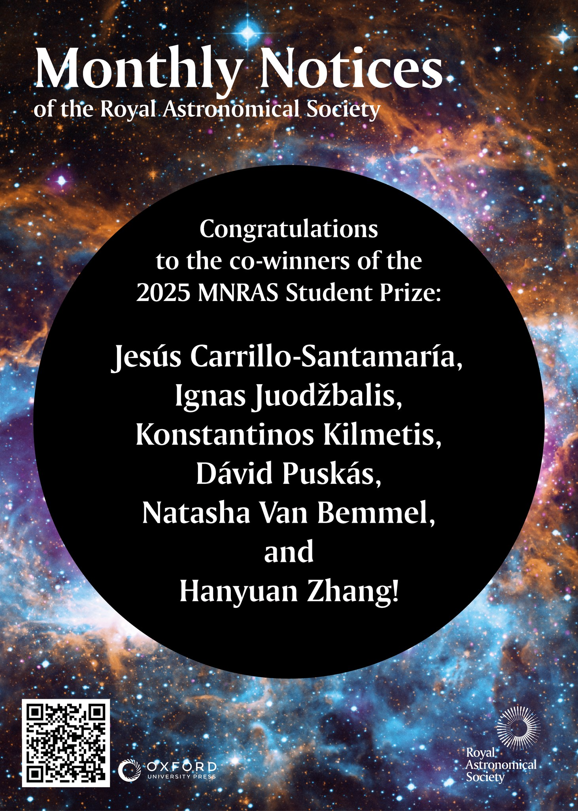

MNRAS Student Prize

At the Royal Astronomical Society National Astronomy Meeting held at Durham,
I was awarded the Monthly Notices of the Royal Astronomical Society (MNRAS) Student Author Prize.
This prize was awarded for my first first-author paper, An optically led search for kilonovae to z~.3 with the Kilonova and Transients Programme (KNTraP).
Winners are decided by the expert Editorial board who vote based on the quality of research, the clarity of the paper, and the impact of the results.